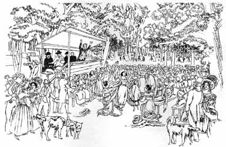

The history of Adventism begins with William Miller. The story of this honest farmer laying aside all commentaries and with an English Bible and concordance quite singly coming to the great prophetic truths of Daniel and Revelation has been greatly overstated—much to the detriment of the early Adventist image. Unless we want to place Miller in the same category as Joseph Smith—gaining information from gold plates and an angel—we should recognize him as a part and product of his contemporary religious community. No one can come to the truth by studying the Bible in isolation. The church is a community. Each member can only understand "with all saints" the magnitude of the love of God in Jesus Christ. The early church required the interaction of thousands of minds over hundreds of years before it could articulate a clear Christology. If a person were to obtain "great light" on his own, it would not be worth listening to. And if anyone pretends to receive his light from his own private study of the Bible apart from the Christian community, he is either a fool or a liar or both.
Miller was neither a fool nor a liar. Although an analytical and orderly mind facilitated his personal study, the evidence indicates that he built on a long tradition of scholarship and prophetic interpretation. Furthermore, he was part and product of an apocalyptic fervor which swept old England and New England in the first half of the nineteenth century.
One hundred years before Miller, the German Lutheran theologian
and scholar, Johann Albrecht Bengel (1687-1752), first proposed
Heilsgeschichte—the theology of salvation history. From his study of
Daniel and Revelation, Bengel felt he could predict the date of the end,
which he said would occur about 1836. Bengel's work influenced John
Wesley of his own century. The Millerites were also acquainted with
Bengel and were conscious heirs of his tradition.
The American War of Independence, the French Revolution and the Great Awakenings which swept America led to a profound interest in apocalyptic speculations. It was rather commonly believed that the 1260 days (years) of papal supremacy ended in the 1790's. Attention then began to shift from Daniel 7 to Daniel 8 and the 2300 days.1
The church had long neglected the doctrine of the second advent. And as one church historian has aptly observed, any neglected truth has the habit of returning to the church with a vengeance. As the neglected doctrine of justification by faith returned to the church of the sixteenth century with a vengeance, so the doctrine of the second advent returned in the nineteenth century. Scores of writers dealt with the prophetic times, and these subjects were widely agitated.
In 1810 an Englishman, John A. Brown, wrote in a leading Church of England journal, the Christian Observer, that the 2300 days began in 457 B.C. and would end in A.D. 1843. William Cuninghame, a prominent Scottish layman, accepted the plausibility of these dates. He speculated that the 1335 days of Daniel 12 would end in 1867.
Joseph Wolff, a famous Jewish Christian and world traveler, declared that he thought the millennium would begin in 1847. Edward Irving, a great Presbyterian preacher, stirred thousands in Scotland and England with the doctrine of the advent. He also accepted 1847 as the probable date for Christ's return.
In America a number of men studied the prophetic times and predicted that the end would come somewhere near the middle of that century. So Miller certainly did not make a startling new discovery. He developed a fairly consistent and orderly prophetic schema, and through Providence the climate of events in New England and upstate New York thrust him into the forefront of the apocalyptic fervor. From his first public appearance in 1831, the movement with which he was identified rapidly grew in that part of the United States. At the height of the Millerite movement he was joined by about two hundred ministers and fifty thousand followers.
But this was only one ferment in America among many.2 The extent and impact of the Millerite movement have sometimes been overestimated. It is easy for enthusiastic participants to regard their movement as all-encompassing, with everyone either for or against it. Actually, Bible societies, benevolent groups and many Christian scholars went about their work for Christ with dedication, neither actively for nor against Millerism.
We need to keep Miller's work in perspective. His greatest contribution was in those areas where he gathered and preserved the best of the past. It is clear from his own testimony after the Great Disappointment that he did not basically teach new things. He challenged his critics to show where he had departed from the acknowledged principles of accepted Protestant interpretation of the Bible.3
We may laud Miller's pathfinding originality in taking other men's speculations about the time of the end and working them into precise and rather dogmatic formulations. But we also need to remember that his troubles stemmed from that very originality.
Some religious historians credit Miller with being foremost in reviving premillennialism in the United States in the nineteenth century. He has even been called the father of modern ecumenism. While that is probably an exaggeration, Miller was a true ecumenist who hated sectarianism. His movement was truly transdenominational. He longed for the gospel to transcend all sectarian boundaries. It was this deep antipathy toward sectarianism that finally helped dissolve Miller's movement, for most of his followers were reluctant to start another religious organization.
—————————————————
1 As early as 1768 a German Calvinist minister, Johann Philipp Petri (1718.1792), had linked Daniel 8 and 9 and said that the 2300-day period began in 453 B.C. Bengel had already identified the 2300 days as literal years.
2 William Miller's day was the age of prophets. Not only were there religious prophets in astounding variety, but there were health prophets and social prophets in abundance. It was an exciting age. It was an age not only of the emancipation of slaves in the United States, but of women too. A number of women became notable voices in American life. Margaret Fuller, Lucy Stone, Jemima Wilkinson, "Mother Ann" Lee, Mary Baker Eddy and the Fox sisters were only a few of the American women who rose to prominence. Great missionary movements and aggressive Bible societies sprang up and asserted a tremendous influence. England and the United States pioneered in the mass distribution of Christian literature. Large Sunday School societies were organized to keep pace with burgeoning frontier life. Temperance crusaders stirred the country. In the 1830's Sylvester Graham was a mighty crusader for simple living, vegetarianism, coarse ground bread and sexual restraint. See Edwin S. Gaustad, ed., The Rise of Adventism: Religion and Society in Mid-Nineteenth-Century America (New York: Harper & Row, Publishers, 1974), for a series of helpful essays.
3 In the Midnight Cry of December 5, 1844, William Miller wrote to Joshua V. Himes: "I had not a distant thought of disturbing our churches, ministers, religious editors, or departing from the best biblical commentaries or rules which had been recommended for the study of the scriptures. And even to this day, my opposers have not been able to show where I have departed from any rule, laid down by our old standard writers of the Protestant faith" (pp. 178-80). How could Miller say this unless he was well acquainted with the standard works of his day? This must modify the legend of his laying aside the use of all commentaries and using nothing but the Bible and a concordance.